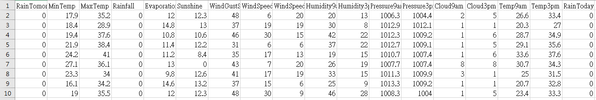

澳洲天氣站的氣象預測
訓練資料集: 700筆
資料內容
以預測明天是否降雨為目標，特徵包含今天是否降雨、降雨量、蒸發量、日照、
不同時段的風速與風向、溫度。
資料來源:
Rain in Australia
Date
Location: The common name of the location of the weather station
MinTemp: The minimum temperature in degrees celsius
MaxTemp: The maximum temperature in degrees celsius
Rainfall: The amount of rainfall recorded for the day in mm
Evaporation: The so-called Class A pan evaporation (mm) in the 24 hours to 9am
Sunshine: The number of hours of bright sunshine in the day.
WindGustDir: The direction of the strongest wind gust in the 24 hours to midnight
WindGustSpeed: The speed (km/h) of the strongest wind gust in the 24 hours to midnight
WindDir9am: Direction of the wind at 9am
WindDir3pm: Direction of the wind at 3pm
WindSpeed9am: Wind speed (km/hr) averaged over 10 minutes prior to 9am
WindSpeed3pm: Wind speed (km/hr) averaged over 10 minutes prior to 3pm
Humidity9am: Humidity (percent) at 9am
Humidity3pm: Humidity (percent) at 3pm
Pressure9am: Atmospheric pressure (hpa) reduced to mean sea level at 9am
Pressure3pm: Atmospheric pressure (hpa) reduced to mean sea level at 3pm
Cloud9am: Fraction of sky obscured by cloud at 9am. This is measured in "oktas", which are a unit of eigths. It records how many eigths of the sky are obscured by cloud. A 0 measure indicates completely clear sky whilst an 8 indicates that it is completely overcast.
Cloud3pm: Fraction of sky obscured by cloud (in "oktas": eighths) at 3pm. See Cload9am for a description of the values
Temp9am: Temperature (degrees C) at 9am
Temp3pm: Temperature (degrees C) at 3pm
RainToday: Boolean: 1 if precipitation (mm) in the 24 hours to 9am exceeds 1mm, otherwise 0
RainTomorrow: The amount of next day rain in mm. Used to create response variable RainTomorrow. A kind of measure of the "risk".
資料前處理
將'Data'、'Loaction'等不影響明日是否會下雨的因素刪除。
而'WindGustDir', 'WindDir9am', 'WindDir3pm'為風向，
由於是以文字表示，難轉換成數字，因此先刪除。
最後將明日及今日是否會下雨的欄位，改成1/0表示。

測試資料集: 300筆
預測結果
藍色為明日不下雨、綠色為明日下雨
準確率達81.7%